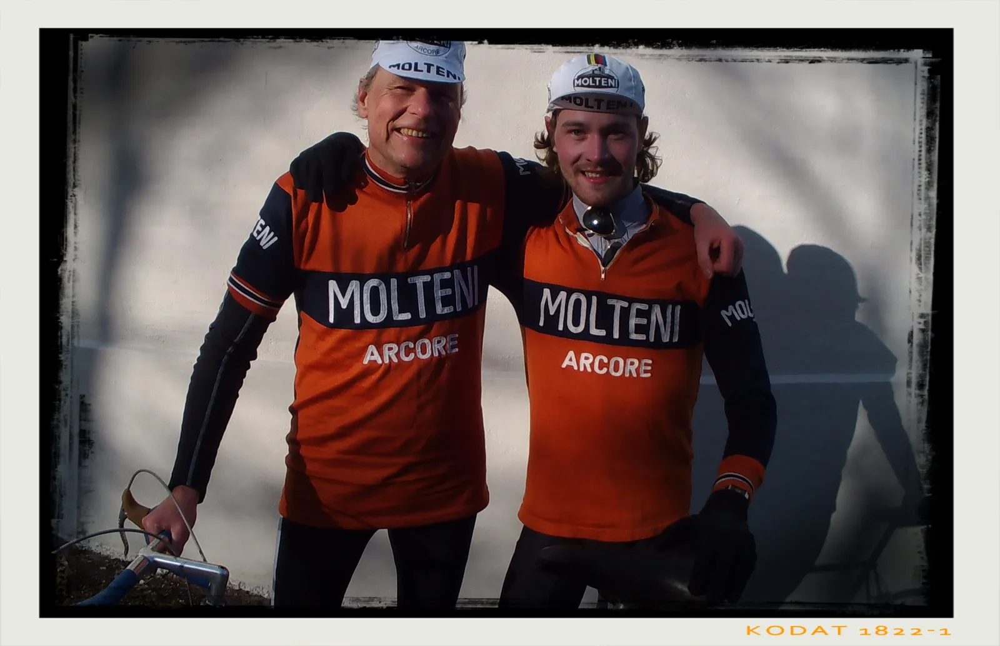

Go ahead – make our day!

Squadra Molteni har oprustet før sæsonstarten. To nye stagiaires er kommet på holdet – og de har ved årets første træningssamling allerede vist, at de er klar til at køre det orange ud af øjnene.
Carsten Jacobsen er fra den exceptionelle årgang 1957. Carsten kørte licensløb i 1970’erne for KCK og har nu fået sig en smuk orange Eddy Merckx Molteni-replika, men fuld Campagnolo Nouvo/Super Record. Carsten har langt fra miste gejsten. Tværtimod – han er klar som aldrig før, og har allerede en skummel plan for sæsonen:
Jeg manglede lidt watt på bakkerne, men det vil der blive rettet op på. Jeg satser på, at holdlægen har et trick eller to i ærmet. Vi er jo begge fra en tid, hvor tingene ikke var helt så sofistikerede som nu, så mon ikke han har et tip til en rytter i sin karrieres efterår.
Christian Hellesø Vaaben er årgang 1993. Christian har kørt licens siden 2011. Han kørte en enkelt sæson i D, én sæson i C og har kørt i B-klassen siden 2014. Hans force ligger på bakkerne og generelt når terrænet går op og ned.
Jeg har længe været optaget af Squadra Moltenis aktiviteter, så at kunne køre som stagiaire på holdet, er klart en drøm der nu går i opfyldelse. Jeg ser frem til at køre nogle løb for holdet, når det ellers passer ind med mine studier og job.
Hele Squadra Molteni byder Carsten og Christian velkommen.
